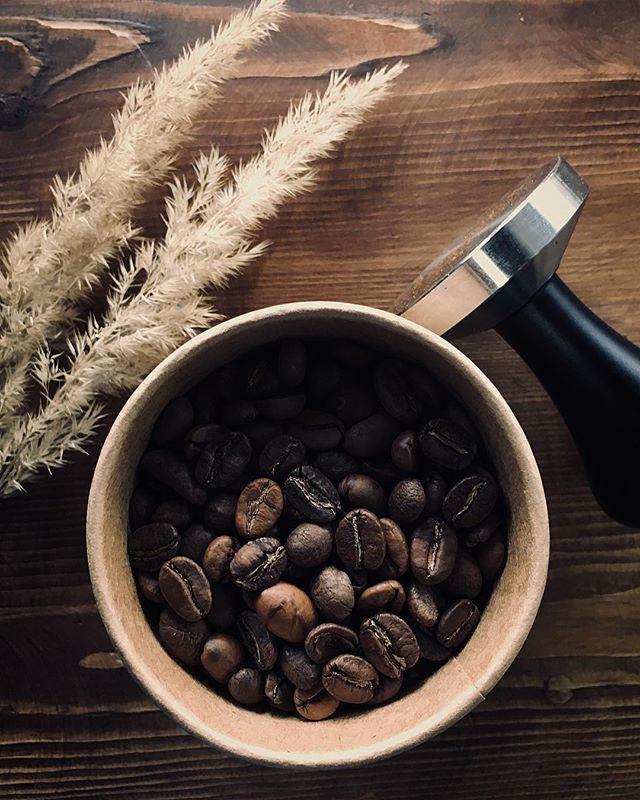
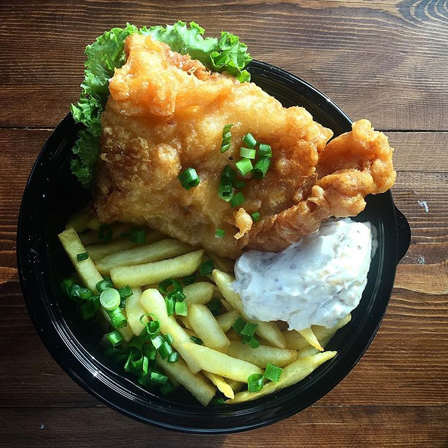

Первое, что мы делаем, придя на работу - завариваем наш любимый чёрный кофе с кокосовым молоком и включаем наш любимый плейлист ☕️🎶 Мы любим нашу утреннюю рутину💚
А как вы любите начинать свой рабочий день?


Встречайте наше новое блюдо в меню. Старинный английский фастфуд FISH&CHIPS!🐟
Упоминание об этом блюде можно встретить в «Оливере Твисте», а Джордж Оруэлл писал, что фиш-энд-чипс является неотъемлемой составляющей домашнего комфорта для рабочего класса в Англии.